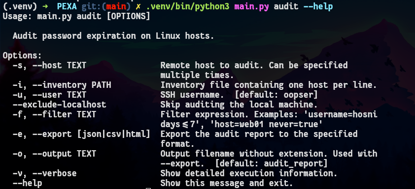
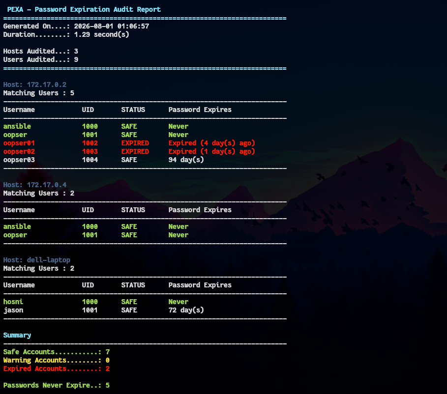
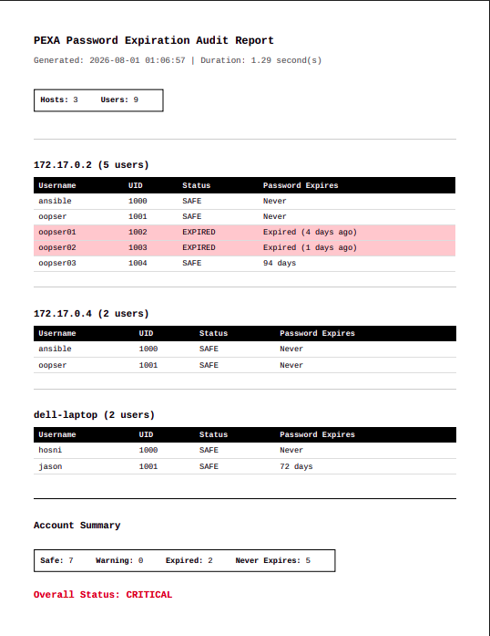
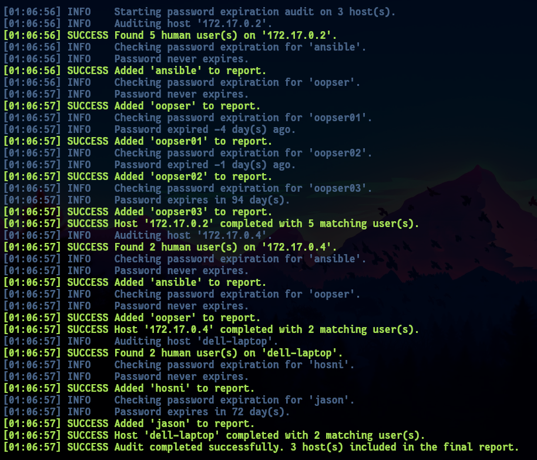

PEXA - Password Expiration Auditor¶
A Python command-line tool that audits password expiration across multiple Linux hosts, helping system administrators identify expired accounts, upcoming expirations, and generate professional reports.
Overview¶
PEXA is the first project of the OOPS (Operations Optimization & Python Scripts) collection.
It was built around a realistic system administration scenario where an organization manages hundreds of Linux servers and needs a reliable way to monitor password expiration policies.
Instead of manually connecting to every server and checking user accounts, PEXA automates the entire process.
The Scenario¶
Imagine you're responsible for maintaining 250 Linux servers.
Every Monday morning, management asks for a report like this:
| Hostname | Username | Password Expires |
|---|---|---|
| web01 | nginx | Never |
| db01 | mysql | Never |
| vpn01 | hosni | 12 day(s) |
| mail01 | admin | Expired |
Doing this manually is repetitive, time-consuming, and error-prone.
PEXA performs the audit automatically and generates reports in multiple formats.
Features¶
- Audit local and remote Linux hosts
- SSH support using AsyncSSH
- Inventory file support
- Automatic filtering of system accounts
- Password expiration detection
- Human-readable console reports
- Colored audit output
- Verbose execution mode
- Flexible filtering
- JSON report export
- CSV report export
- HTML report export
- Clean object-oriented architecture
- Asynchronous remote execution
Requirements¶
- Python 3.12+
- Linux
- SSH access to remote hosts
- Passwordless sudo for the
chagecommand (or appropriate permissions)
Installation¶
Clone the repository:
git clone https://github.com/hosnizaaraoui/OOPS.git
Move into the project:
cd OOPS/pexa
Create a virtual environment:
python -m venv .venv
Activate it:
Linux
source .venv/bin/activate
Install dependencies:
pip install -r requirements.txt
Inventory File¶
PEXA accepts an inventory file containing one host per line.
Example:
172.17.0.2>oopser
172.17.0.4>oopser
Format
hostname>username
If the username is omitted, the value supplied with --user will be used.
Usage¶
Audit hosts from an inventory file:
.venv/bin/python3 main.py audit --inventory inventory.txt
Audit a specific host:
.venv/bin/python3 main.py audit --host 192.168.1.20
Audit multiple hosts:
.venv/bin/python3 main.py audit \
--host web01 \
--host db01 \
--host mail01
Specify the SSH username:
.venv/bin/python3 main.py audit \
--inventory inventory.txt \
--user admin
Exclude the local machine:
.venv/bin/python3 main.py audit \
--inventory inventory.txt \
--exclude-localhost
Enable verbose mode:
.venv/bin/python3 main.py audit \
--inventory inventory.txt \
--verbose
Filtering¶
PEXA supports filtering audit results using a simple expression syntax.
Examples:
--filter "username=hosni"
--filter "status=expired"
--filter "days<7"
--filter "host=web01 status=warning"
Multiple filters can be combined.
Exporting Reports¶
Generate JSON:
.venv/bin/python3 main.py audit \
--inventory inventory.txt \
--export json
Generate CSV:
.venv/bin/python3 main.py audit \
--inventory inventory.txt \
--export csv
Generate HTML:
.venv/bin/python3 main.py audit \
--inventory inventory.txt \
--export html
Generate multiple reports simultaneously:
.venv/bin/python3 main.py audit \
--inventory inventory.txt \
--export json \
--export csv \
--export html
Specify the output filename:
.venv/bin/python3 main.py audit \
--inventory inventory.txt \
--export html \
--output weekly_report
This generates:
weekly_report.html
Example Output¶
========================================================================
PEXA - Password Expiration Audit Report
========================================================================
Generated On....: 2026-08-01 00:35:38
Duration........: 1.27 second(s)
Hosts Audited...: 3
Users Audited...: 9
========================================================================
Host: 172.17.0.2
Matching Users : 5
------------------------------------------------------------------------
Username UID STATUS Password Expires
------------------------------------------------------------------------
ansible 1000 SAFE Never
oopser 1001 SAFE Never
oopser01 1002 EXPIRED Expired (4 day(s) ago)
oopser02 1003 EXPIRED Expired (1 day(s) ago)
oopser03 1004 SAFE 94 day(s)
------------------------------------------------------------------------
Host: 172.17.0.4
Matching Users : 2
------------------------------------------------------------------------
Username UID STATUS Password Expires
------------------------------------------------------------------------
ansible 1000 SAFE Never
oopser 1001 SAFE Never
------------------------------------------------------------------------
Host: dell-laptop
Matching Users : 2
------------------------------------------------------------------------
Username UID STATUS Password Expires
------------------------------------------------------------------------
hosni 1000 SAFE Never
jason 1001 SAFE 72 day(s)
------------------------------------------------------------------------
Summary
------------------------------------------------------------------------
Safe Accounts...........: 7
Warning Accounts........: 0
Expired Accounts........: 2
Passwords Never Expire..: 5
Overall Result........: CRITICAL
Audit completed successfully.
[00:35:38] SUCCESS JSON report written to '/home/hosni/Desktop/report.json'
Screenshots¶
CLI Help¶

Console Audit¶

HTML Report¶

Verbose Mode¶

Project Structure¶
pexa/
├── collectors/
├── filters/
├── hosts/
├── models/
├── reports/
├── utils/
├── main.py
└── README.md
Future Improvements¶
Although the initial objectives have been completed, future enhancements may include:
- Parallel host execution
- Email report delivery
- YAML configuration files
- PDF report generation
- Scheduling support
- Unit tests
Contributing¶
Contributions, feature requests, and ideas are always welcome.
If you have an idea for improving PEXA, feel free to open an Issue or submit a Pull Request.
License¶
PEXA is part of the OOPS (Operations Optimization & Python Scripts) repository and is licensed under the MIT License.